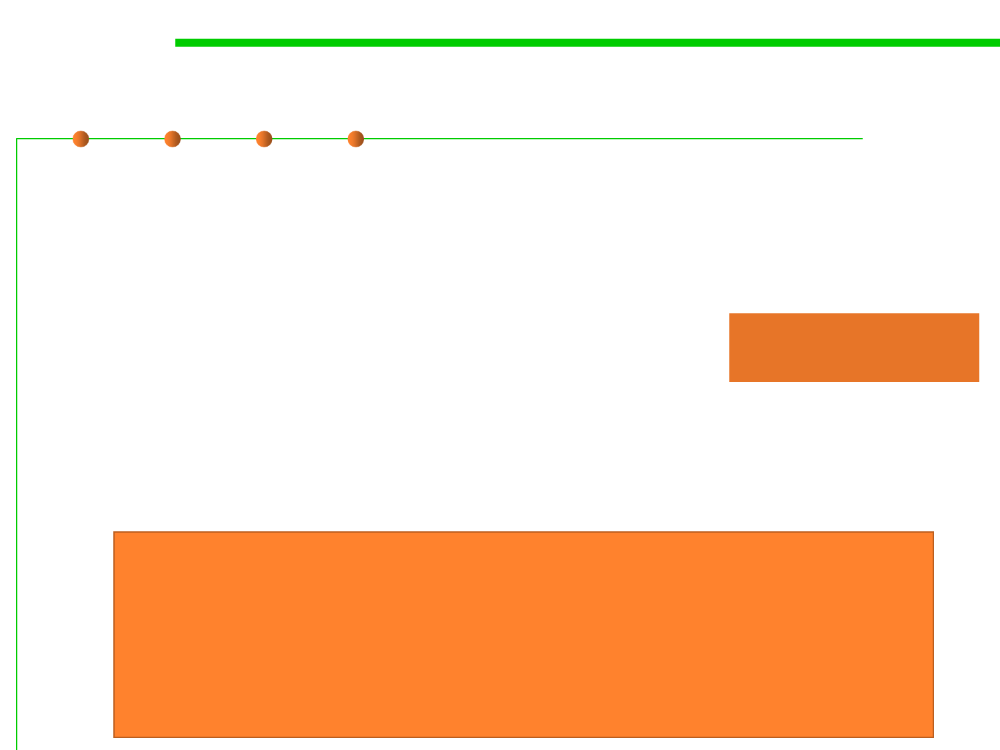

(4) Documentation matters
5.2 Construction for Reuse
▪ Document every class, interface, method, constructor, parameter,
and exception
– Class: what an instance represents
– Method: contract between method and its client
▪ Preconditions, postconditions, side-effects
– Parameter: indicate units, form, ownership
Recall Chapter 4 for
Understandability
▪ Document thread safety
▪ If class is mutable, document state space
Reuse is something that is far easier to say than to do. Doing it
requires both good design and very good documentation. Even
when we see good design, which is still infrequently, we won't
see the components reused without good documentation.
– D. L. Parnas
Software Aging, on ICSE 1994